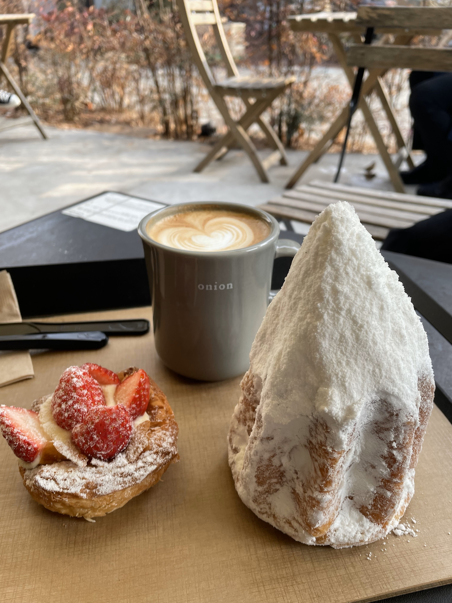

關於我
2023/03/30
基本資料
- 生日:
- 1999/03/10
- 學歷:
- 元智大學資訊傳播學系科技組
- 兵役:
- 役畢
專業能力
- 網頁開發:
- 利用html、css、bootstrap實現響應式網頁。藉此製作了"形聲"的網站、"優創數位"的網站。
- JavaScript:
- 實現"形聲"與firebase的上傳與讀取、用phaser製作"YZU歌唱大賽"小遊戲。
- 互動裝置程式:
- 利用arduino與相關元件實現觸碰感應的裝置。藉此設計"形聲"的互動裝置。
工作經歷
- 優創數位 網頁設計實習生(2020/07~2020/09):
- 1.運用html，css，bootstrap製作公司前端網頁
- 2.運用ps產出需要的素材
- 3.設計並製作宣傳動畫
- 麥當勞 服務員(2017/06~在職):
- 1.快節奏中調適心情，保持良好溝通
自傳
我的名字是陳晁傑，1999年在桃園出生，成長於普通家庭中。平時喜歡聽音樂與彈吉他，偶爾也會慢跑或騎車享受獨處。
在元智大學時就讀資傳系，經過c++、c#、javascript等課程了解程式如何運作。大三時修習php程式設計，學到用php操作網頁資料，向MySQL資料庫發出請求，並利用這堂課的所學製作了一個留言版做為期末專題。在學時也修過網頁遊戲設計課程，用phaser引擎和javascript寫遊戲在網頁運行，並在期末製作flappy bird玩法的遊戲。
大四暑假期間在優創數位擔任實習生，運用html、css、bootstrap製作公司網頁，協助服務與產品的推廣，以及設計分鏡腳本並用AfterEffect製作宣傳小動畫。畢業製作的作品是以arduino感測的互動裝置，為了讓使用者能成為作品的一部分，也製作了一個網站讓大家能上傳自己的內容，並在展場中即時更新。在過程中藉由官方文件摸索出如何操作firebase資料庫，合作的過程中也學到如何與組員溝通。
雖然對相關產業的職場還不熟悉，但自己在畢業後因為好奇稍微摸索了python與Vue，也利用空閒時間考多益，如果在職場上接觸新的工具，一定也能拿出態度學習。
生活花絮

